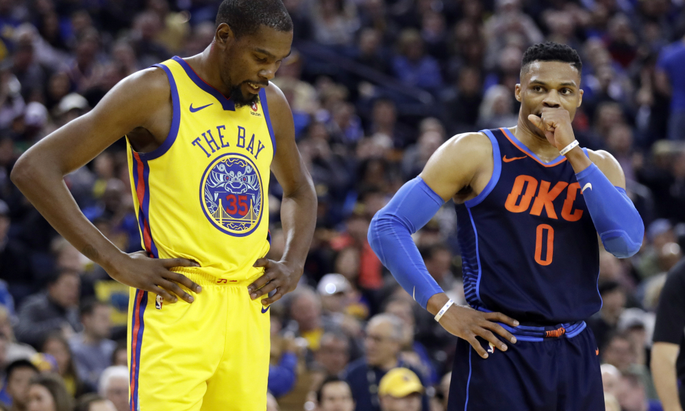
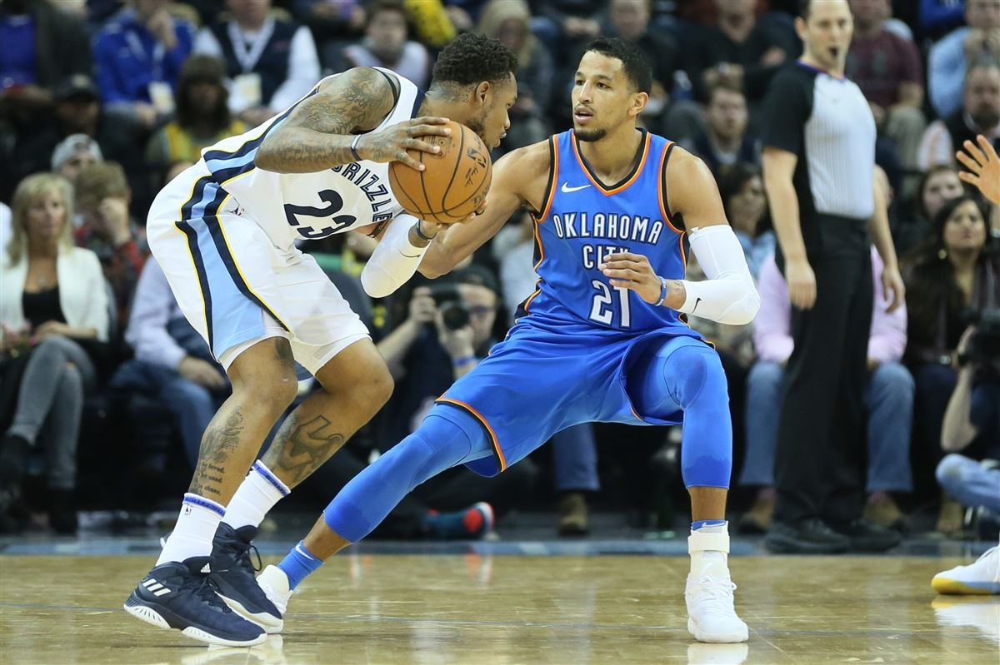
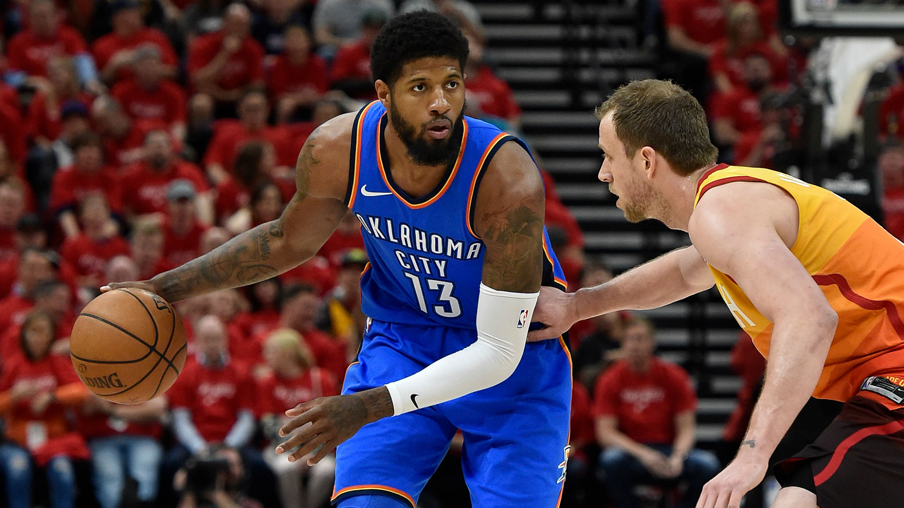
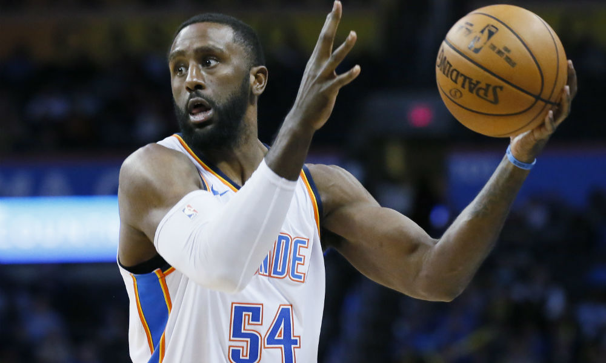
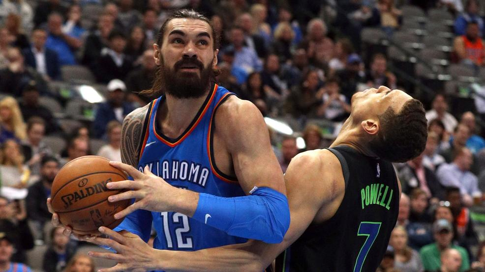

| Average Rebounds per Game | Average Assists per Game | Average Points per Game |
|---|---|---|
| 10.7 | 10.4 | 31.6 |
| 10.1 | 10.3 | 25.4 |
The Thunders’ projected lineup is shown above. Russell Westbrook won a Most Valuable Player award for the 2016-2017 season. He is also Westbrook also is a 7-time all-star and has been on the All-NBA team 7 times. He was ranked #5 by ESPN. He has become the first player in the NBA who has averaged a triple-double in the past two seasons. A triple double means that the player averaged double-digit stats in three stats. For example, Russell Westbrook averaged double digits in points, assists, and rebounds. 
Andre Roberson is the defensive mind on the lineup. He does not do well on offense, but his defense is outstanding. However, Andre Roberson suffered a ruptured left patellar tendon on January 28, 2018. Unfortunately, he did not play in the playoffs and will mis some games for the 2018-2019 season.  Paul George was touched on in the previous section, but he is a 5-time all-star. He is been on the All-NBA team for three seasons. He is a two-way player, which he excels at both offense and defense. He was recognized as an All-Defensive Player for three years and has been on the All-NBA roster for 5 years.  Patrick Patterson is a nice addition to the Thunder. He is also viewed as a defensive mind and can stretch the floor the other end. Unfortunately, he is not good stats wise.  Steven Adams is probably viewed as the most strongest and underrated center in the NBA. He has lead the 2017-2018 season in average offensive rebounds per game. He is also very good at the pick and roll at 7’0. 